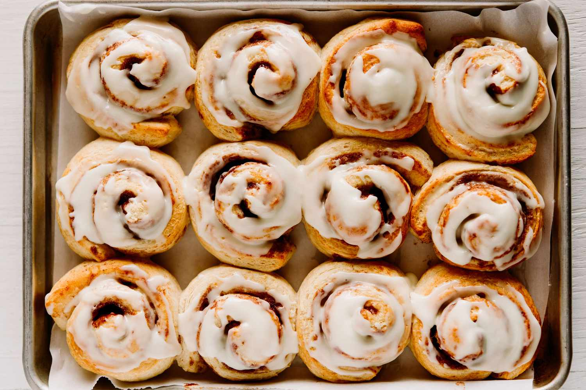

Cinnamon Rolls

Delicious Cinnamon Rolls
Follow this easy recipe for some delicious cinnamon rolls
Ingredients
For the dough:
- 3/4 cup warm milk
- 2 1/4 teaspoons quick rise or active yeast
- 1/4 cup granulated sugar
- 1 egg plus 1 yolk,at room temp
- 1/4 cup butter,melted
- 3 cups bread flour,plus more for dusting
- 3/4 teaspoon salt
For the filling:
- 2/3 cup dark brown sugar
- 1 1/2 tablespoons ground cinnamon
- 1/4 cup butter,softened
For the cream cheese frosting:
- 4 oz cream cheese,softened
- 3 tablespoons butter,softened
- 3/4 cup powdered sugar
- 1/2 teaspoon vanilla extract
Steps
- Warm milk to around 110 degree F. Transfer warm milk to
the bowl of an electric mixer and sprinkle yeast on top.
Add in sugar, eggs, egg yolk and melted butter. Mix until
well combined. Next stir in flour and salt with a wooden
spoon until a dough begins to form.
- Place dough hook on a stand mixer and knead dough on medium
speed for 8 minutes. Dough should form into a nice ball and
be slightly sticky. If it's TOO sticky(meaning it's sticking
to the bottom of the mixer, add in 2 tablespoons more of bread
flour.)
-
Transfer doughball to a well-oiled bowl, cover with plastic
wrap and warm towel. Allow dough to rise for 1 hour to 1 1/2 hours,
or until doubled in size.
-
After dough has doubled in size, transfer dough to a well-floured
surface and roll out into a 14*9 inch rectangle. Spread softened
butter over dough, leaving a 1/4 inch margin at the far side of the
dough.
-
In a small bowl, mix together brown sugar and cinnamon. Use your hand
to sprinkle mixture over the buttered dough, then rub the brown sugar
mixture into the butter.
-
Tightly roll dough up, starting from the 9-inch side and Place
seam side down making sure to seal edges of the sough as best
you can. You will pprobably need to cut off about an inch off
the ends of the dough as the ends won't be as full of cinnamon
sugar as we'd want it to be.
-
Cut into 1 inch sections with a serrated knife or floss. you
should get 9 large pieces.
-
Place cinnamon rolls in a greased 9*9 inch baking pan or round
9 inch cake pan. Cover with plastic wrap and a warm towel and
let rise again for 30-40 minutes.
-
Preheat oven to 350 degrees F. Remove plastic wrap and towel and
bake cinnamon rolls for 20-25 minutes or until just slightly golden
brown on the edges. You want to underbake them a little so they stay
soft in the middle, that's why we want them just slightly golden brown.
Allow them to cool for 5-10 minutes before frosting. Makes 9 cinnamon
rolls.
-
To make the frosting:In the bowl of an electric mixer,
combine cream cheese, butter, powdered sugar and vanilla extract. Beat
until smooth and fluffy. Spread over cinnamon rolls and serve immediately.
Enjoy!